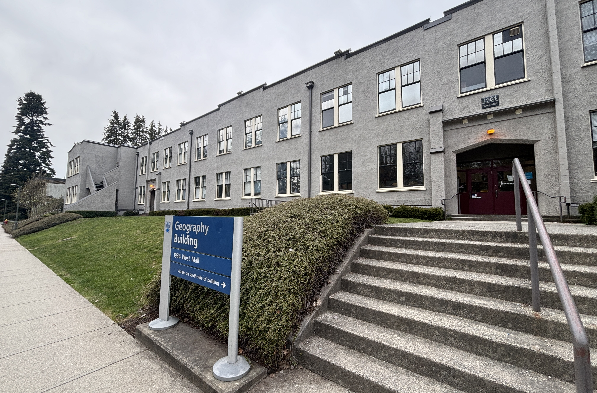

The EMBRS Lab at The University of British Columbia in the Department of Geography will investigate air quality, public health, and climate-related issues with a central focus on fires. Please get in touch if you're interested in working with me at UBC as a graduate student (Masters or PhD)!

I am looking to recruit 1-2 MSc and PhD students to start in the 2026-2027 academic year. The deadlines for the MSc and PhD programs at UBC Geography are in mid-December and mid-January, respectively. Interested students should fill out this Google Form before they apply. I will then email strong applicants to set up a brief Zoom chat. Strong applicants will have some experience in coding (e.g., R, Python, Google Earth Engine) and conducting research in environmental science, atmospheric science, geography, applied math, and/or computer science and at least some coursework or training in these topics. Competitive Ph.D. applicants should have completed a MSc and conducted independent research that is published or moving toward publication in reputable peer-reviewed journals. Note that only applicants who were interviewed via Zoom prior to the application deadline will be ranked for graduate admissions review.
If you are unable to access the Google Form, please email (tianjia.liu [at] ubc.ca) me with [Prospective Student Inquiry] in the email subject line and include the following:
• research level you're interested in (undergraduate, Masters, or PhD)
• CV / resume
• unofficial transcripts
• a brief statement of your research interests and why you are interested in this lab
MSc and PhD students in UBC Geography are guaranteed funding through research and teaching assistantships, fellowships, awards, and department funds. I encourage applicants, if eligible, to apply for NSERC graduate fellowships (MSc, PhD). I will assist with applications for these programs and other relevant external funding programs. I currently do not have guaranteed funding for postdocs, but I would be happy to assist with applications for UBC and NSERC postdoctoral fellowship programs.
UBC undergraduates interested in joining the lab should contact me via email and attach a resume or CV. Students work with me through undergraduate research programs (e.g., AURA, EnSURE), work learn, and direct studies/captsone courses. Undergraduate students will typically start with data curation and analysis, with opportunities down the line for presenting research and writing scientific papers as co-author or first-author.